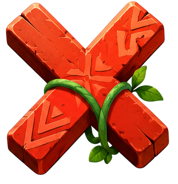
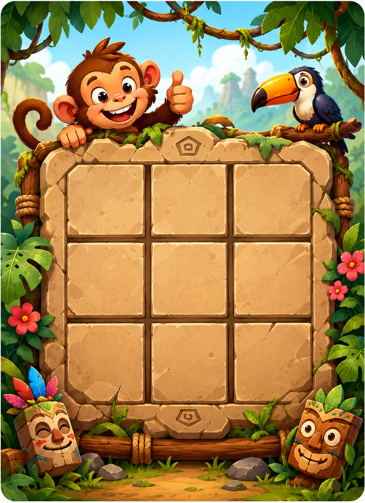

Английский · играй и учись
Jungle
Words
Маленькие слова.
Большое приключение!
Твоя фишка

Выберем перед игрой0попыток
0ошибок
Обезьянка приглашает тебя играть!
Собери слово. Поставь фишку.
Выстрой три в ряд!
Выстрой три в ряд!
